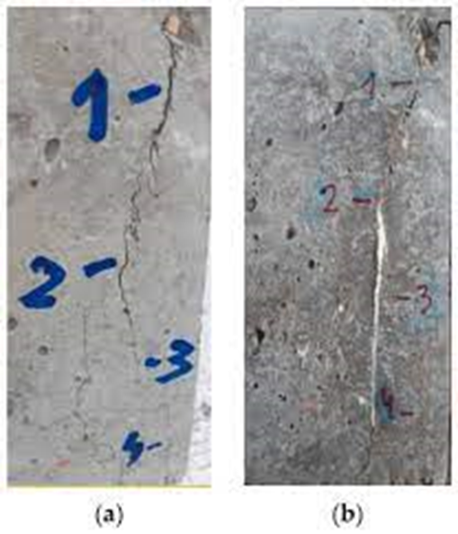

افزودنی های کریستالی آب بند بتن، مروری بر محصول Struseal C512 شرکت استرامیکس (بسپار بتن ایرانیان هوشمند)
افزودنی های کریستالی آب بند بتن، مروری بر محصول Struseal C512 شرکت استرامیکس (بسپار بتن ایرانیان هوشمند)
1- آیا محدودیت هایی وجود دارد که بر عملکرد Struseal C512 (افزودنی کریستالی) تاثیر بگذارد؟
استفاده از افزودنی کریستالی Struseal C512 به حداقل عیار سیمانی 300 کیلوگرم بر متر مکعب در طرح اختلاط بتن نیاز دارد. البته، اثربخشی بهینه به عوامل متعددی از جمله ضخامت بتن، مشخصات سیمان پرتلند، وجود فولاد تقویت کننده کافی (طراحی سازه ای مناسب) برای استحکام و کنترل ترک در بتن، کیفیت عملیات اجرا و پرداخت بتن، آب بندی درزهای ساختمانی و غیره بستگی دارد. Struseal C512 به حداقل ضخامت بتن 5 سانتی متر (2 اینچ) و حداقل مقاومت طراحی 20 مگاپاسکال (3000 psi) نیاز دارد.
2- آیا می توان از افزودنی کریستالی Struseal C512 در بتن حاوی خاکستر بادی، میکروسیلیس یا سیمان سربارهای استفاده کرد؟
بله. افزودنی کریستالی Struseasl C512 زمانی که در طرحهای مخلوط پیشرفته استفاده میشود که از مواد جایگزین سیمان مانند خاکستر بادی، میکروسیلیس و سرباره استفاده میشود، بسیار مؤثر است. واکنش هایی که برای تشکیل ساختار کریستالی رخ می دهد بسیار پیچیده است. در طول فرآیند هیدراتاسیون سیمان، مواد شیمیایی فعال Struseal C512 نه تنها با هیدروکسید کلسیم و ذرات سیمان هیدراته نشده، بلکه با اکسیدهای فلزی و نمک های معدنی مختلف، بدون توجه به نوع سیمان مورد استفاده، واکنش می دهند. برای تعیین میزان دوز برای چنین طرح های مخلوط سیمان با بخش فنی STRUMIX مشورت کنید.
3- آیا می توان از افزودنی کریستالی Struseal C512 در بتن حاوی مواد افزودنی دیگر مانند کاهنده های آب، روان کننده های بتن یا عامل حباب هوا استفاده کرد؟
بله. افزودنی کریستالی Struseasl C512 به طور موفقیت آمیزی در طرح های اختلاط بتن حاوی انواع مواد افزودنی دیگر استفاده شده است. با این حال، باید توجه داشت که استفاده از افزودنیهای کندگیر کننده در مقادیر دوز توصیه شده ممکن است باعث افزایش بیشتر زمان گیرش در هنگام استفاده با Struseal C512 شود.
4- زمان گیرش و مقاومت فشاری بتن تحت تأثیر افزودنی کریستالی Struseal C512 چگونه است؟
زمان گیرش بتن تحت تأثیر ترکیب شیمیایی و فیزیکی مواد و مصالح بتن، دمای بتن و شرایط اقلیمی است. هنگام استفاده از افزودنی کریستالی Struseasl C512 ممکن است زمان گیرش افزایش یابد. زمان گیرش به طراحی مخلوط بتن و میزان دوز Struseal C512 بستگی دارد. بتن حاوی افزودنی کریستالی Struseasl C512 ممکن است مقاومت نهایی بالاتری نسبت به بتن بدون افزودنی کریستالی ایجاد کند. بررسی مخلوط های آزمایشی باید در شرایط پروژه برای تعیین زمان گیرش و مقاومت بتن انجام شوند.
5- تفاوت بین افزودنی های کریستالی مختلف در Struseal چیست؟
افزودنی های کریستالی Struseal بسته به کد اختصاصی خاصیتی متمایز زا ارائه میدهند مانند عملکرد آبگریزی در کنار آببندی، عدم دیرگیری و ... . این محصول در کدهای C511 و C512 و C513 ارائه میگردند.
6- میزان دوز توصیه شده برای افزودنی کریستالی Struseasl C512 چقدر است؟
Struseasl C512 با میزان دوز در محدوده 6/0 تا 1 درصد وزنی مواد سیمانی به مخلوط بتن اضافه می شود. میزان مصرف به عوامل دیگری مانند عیار سیمانی، ضخامت مقطع و ... میتواند وابسته باشد. جهت اطلاعات فنی بیشتر با STRUMIX تماس بگیرید.
7- Struseasl C512 چه زمانی به مخلوط بتن اضافه می گردد؟
این افزودنی می تواند در دیگ بچینگ و در زمان ساخت بتن و همزمان با اضافه شدن سیمان به بتن اضافه گردد و همچنین در محل کارگاه نیز می تواند به بتن آماده در تراک اضافه گردد. جهت اضافه کردن مستقیم به تراک بتن آماده، بهتر است افزودنی کریستالی با حدود 80 درصد وزن خود با آب پیش دوغاب گشته و سپس به بتن اضافه گردد.
8- Struseasl C512 عملکرد خود ترمیم شوندگی دارد؟
بله. افزودنی Struseal C512 می تواند ترک های استاتیک تا ضخامت 4 میکرون را در حضور اکسیژن و آب، پل زده و ترمیم کند.

9- سایر مزایایی افزودنی کریستالی Struseal C512 در بتن؟
- کاهش نفوذپذیری بتن و افزایش مقاومت بتن در برابر فشار هیدرواستاتیک آب
- افزایش مقاومت بتن در برابر سیکل یخبندان
- محافظت از خوردگی ارماتور در بتن
- افزایش مقاومت بتن در برابر مواد خورنده و شیمیایی
- افزایش مقاومت سایشی بتن
بهترین مطالب هر ما
ارسال میشه به صندوق پستی شما!
این بالا کلیک کن و ایمیلت رو بنویس
ثبت